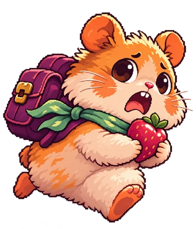

THE ADVENTURE NEVER ENDS
今天，也去发现一点新鲜事。
穿过晨光与月色，把故事装进小小的背包。
无尽冒险 · 随时出发
✦ FOREST CHRONICLES / 森林纪事背上背包。
背上背包。
世界比想象中更大。
无限路段 · 三境流转 · 真假陷阱

团子 / THE LITTLE EXPLORERENDLESS
∞
EXPEDITION
∞
EXPEDITION
WHEELBOUND TRAILS / SQUEEKCHAIN
SEPOLIA · READ ONLY让真实的奔跑，决定下一段冒险。
同一个已结算轮次，同一条赛道。读取合约，不发送交易。
挑战轮次—
轮次工作量—
已结算边界—
读取区块—
dataHash
—正在读取并校验 SqueekCore…
当前模式：无限冒险
赛道由轮次编号与 dataHash 确定；挑战开始后固定，不会随新轮次改变。成绩仍为客户端上报，不是链上验证的成绩。瓜子不是 SQK。
01森林冒险
INFINITE WORLD
晨光林地
0 m瓜子 0得分 0最佳 0♥♥♥
探索 · 跳跃 · 挖洞方向键 / A D 移动 · 空格跳跃 · S / ↓ 挖洞
累计旅程0 m
收集瓜子0
解锁成就0 / 20
到访场景1 / 3
WHAT WILL YOU FIND NEXT?
冒险，不止于跑得更远。
THE WORLD ATLAS
每片森林，都有自己的秘密。
随路程自然渐变，无须解锁才能进入。点击卡片查看探索指南。
⌁
一趟没有终点的旅行
晨光林地 → 红叶黄昏 → 萤火夜林 → 晨光林地。每一轮，都是新的冒险。
THE LITTLE BACKPACK
给冒险，换一身好心情。
使用游戏中收集的瓜子兑换。所有装扮只改变外观，不影响排行榜能力。
储备 0 ◈
LITTLE GOALS. LOVELY REWARDS.
每一小步，都值得记住。
任务每日北京时间 00:00 重置；成就记录你的长期旅程。
每日委托
冒险成就
20 枚旅途徽章THE FIELD GUIDE
了解未知，才更敢向前。
有些危险真实存在，有些只是森林的恶作剧。学会看清线索。
THE FOREST HALL OF FAME
小短腿，也能留下大名字。
钱包签名提交，云端保存。每个冒险家只保留最好的一次。
FOREST HALL OF FAME
冒险家排行榜 TOP 50
我的排名 连接钱包后查看钱包签名提交 · 每地址一条最佳纪录
| 排名 | 冒险家 / 钱包 | 最高分 | 路程 | 瓜子 |
|---|---|---|---|---|
| 正在读取排行榜… | ||||
正在连接排行榜…
休闲榜：成绩由客户端生成，钱包签名验证提交者身份。只在你点击提交并签名后上传钱包地址与本次成绩。